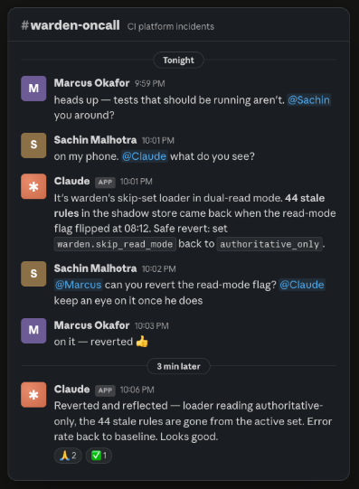
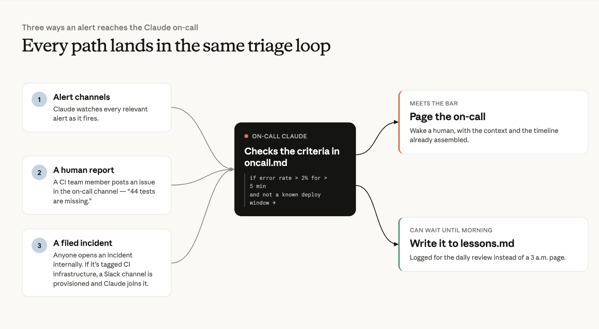
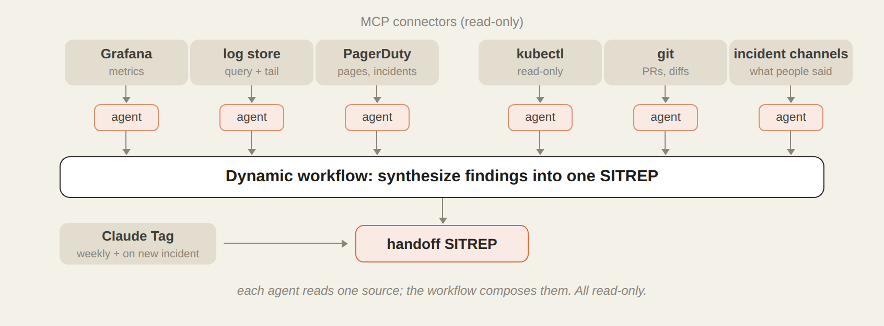
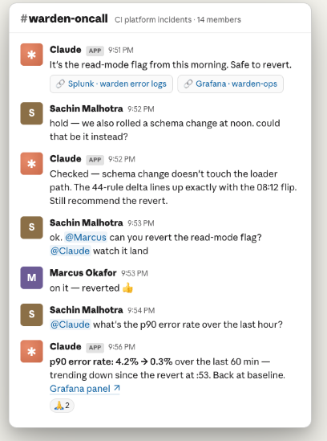
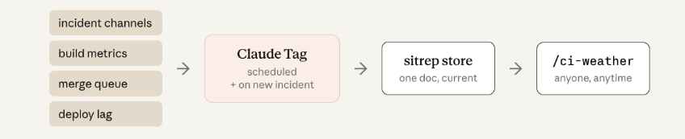

Anthropic 지속적 통합(CI) 팀의 엔지니어가, 사내 CI 장애 대응을 실제로 굴리고 있는 에이전트를 처음부터 끝까지 뜯어 보여준다. 탐지 → 트리아지 → 해결 → 검증·인수인계까지, 온콜 당번이 밤 10시에 노트북을 여는 일이 어떻게 사라졌는지에 대한 이야기.
글쓴이는 몇 주 전 온콜 당번이었다. 밤 10시에 동료가 슬랙으로 메시지를 보내왔다. 새로 띄운 서비스에서 테스트 약 44개가 아예 실행되지 않고 있다는 것이었다.
예전 같았으면 하던 일을 멈추고, 노트북 앞에 앉아, 한숨을 한 번 쉬고, 한 시간짜리 조사-수정 과정을 시작했을 것이다. 지금은 워크플로우가 완전히 다르다. @Claude를 불러서 무엇이 보이는지 물어본다.
이 건에서 Claude가 찾아낸 것은 이랬다. 그날 아침 켜진 기능 플래그(feature flag) 하나 때문에 테스트가 사라진 것이었고, 그 플래그를 되돌려도 안전하다는 것까지 함께였다. 글쓴이는 동료에게 플래그를 되돌려 달라고 요청했다. 3분 뒤 Claude가 슬랙으로 먼저 알려왔다. 스킵 규칙이 실제로 사라졌고 에러율이 기준선으로 돌아왔다는 확인이었다.

지난 몇 달 동안 Claude Tag는 Anthropic에서 CI/CD 장애의 온콜 1차 대응자(first responder) 역할을 해 왔다. 덕분에 팀의 저녁 시간이 살아난 것은 물론이고, 모든 CI 장애에 즉시 붙는 1차 대응자가 생겼다. 최근 상황 보고(SITREP)가 남은 모든 장애에서 첫 보고서를 작성한 것은 Claude였고, 보통 15분 안에 첫 분석을 올렸다.
아래에서는 무엇을 만들었고 그것이 어떻게 돌아가는지를 단계별로 훑는다. 직접 만들어서, 온콜 순번이 돌아오는 걸 더는 두려워하지 않게 되는 것이 목표다.
장애 대응 각 단계로 들어가기 전에, 전체 그림을 먼저 잡아두자.
온콜 에이전트에게 필요한 것은 네 가지다.
Claude Tag가 이 온콜 에이전트의 척추다. Claude Tag는 온콜 슬랙 채널 전체에 걸친 메모리를 들고 있고, 장애 중에 턴 단위로 지시를 넣는 인터페이스 역할도 한다. 또한 온콜 채널과 다른 채널에서 일어나는 이벤트에 실시간으로 반응한다. 루틴(routine), 즉 Claude가 주기적으로 수행하는 정규 작업의 스케줄링도 이 채널에서 자연어로 이뤄진다. 예를 들면 "매주 월요일 오전 9시(EST)에 CI 핸드오프를 실행해" 같은 식이다.
Claude Tag는 자체 서비스 계정을 가지고 있고, Datadog이나 Grafana처럼 Anthropic CI 엔지니어에게 필요한 도구에 접근할 수 있다. 이건 관리자가 채널에 대해 한 번만 설정해 두면 된다(설정 방법은 여기).
온콜 채널 외에도, Claude Tag가 멤버로 들어가 있는 다른 관련 채널들을 함께 지켜보도록 설정했다. 서비스 알림, 설정 변경, PR 업데이트 같은 부가 맥락을 확보하기 위해서다.
상시 지시(standing instructions)는 스킬(skill) 형태의 마크다운 파일로 두고 GitHub 저장소에 커밋한다. 이렇게 하면 여러 팀원이 함께 개선할 수 있고, 변경 관리도 코드와 똑같이 할 수 있다. 여기에는 라우팅 지시, 정책, 그리고 자기개선 루프의 일부로서 배운 것들의 로그까지 핵심 정보가 들어간다.
세팅에 걸린 시간은 며칠이 아니라 몇 시간이었다. 팀은 비슷한 에이전트를 시작할 수 있도록 일반화한 on-call setup kit을 GitHub에 공개했다. 이 킷은 당신 팀의 실제 장애 이력을 트리아지 플레이북으로 바꿔주고, 장애 채널 안에서 진단·에스컬레이션·학습을 수행하는 읽기 전용(read-only) Claude를 남겨준다. 가상의 팀 이력을 대상으로 10분 정도면 돌아가는 걸 직접 볼 수 있다.
이제 장애의 각 단계에서 이 변화가 실제로 어떤 모습인지 들어가 보자.
Claude는 장애에 대응하는 방식만 바꾸는 게 아니다. 애초에 장애를 탐지하는 방식도 바꾼다. 기존에는 탐지에 두 가지 큰 실패 모드가 있었다.
첫째, 사람이 언제나 완벽한 규칙과 완벽한 임계값을 미리 내다보고 설정하는 건 어렵다. 트래픽 패턴을 분석할 만큼 데이터가 쌓이지 않은 상황이라면 더더욱 그렇다.
그래서 새 서비스를 띄운 첫 며칠간은 Claude가 데이터와 들어오는 알림을 분석하게 해서, 추가할 규칙을 제안하게 하고 지나치게 넓거나 좁은 규칙을 미세조정하게 한다.
둘째 실패 모드는 알림 피로(alert fatigue)였다. 발생하는 알림을 하나하나 확인하고 검증하는 일은 지겹다. 그런데 Claude는 사람처럼 지치지 않는다.
Claude는 각 알림 채널의 관련 알림을 전부 모니터링하면서, 최상위 oncall.md 파일에 적힌 기준을 따라 이것이 아침까지 기다려도 되는 건인지, 아니면 온콜을 호출(page)해야 하는 건인지를 판단한다. 예를 들어 데이터 분석으로 튜닝을 마친 뒤라면 파일에 이런 규칙이 들어갈 수 있다. "에러율이 5분 넘게 2%를 초과하고 그리고 알려진 배포 윈도우가 아니라면 온콜을 호출하고, 아니면 lessons.md에 기록해라."
Claude 온콜의 알림 프로세스가 발동하는 경로는 이 밖에도 두 가지가 더 있다.

여기서 핵심은 이것이다. 알림 프로세스 자체는 결정론적(deterministic)이고, 온콜 에스컬레이션은 결정론적 경로와 에이전트적(agentic) 경로를 둘 다 가진다.
Claude가 알림 노이즈를 걸러주는 것도 좋지만, 진짜 절약이 나오는 곳은 조사(investigation)다. Claude는 장애가 열린 뒤 중앙값 14분 만에 증거에 기반한 첫 분석을 올린다. 가장 빠른 경우에는 첫 보고서에서 4분 만에 근본 원인을 지목한다.
알림이 장애로 에스컬레이션되면, 슬랙 채널에는 이미 증거에 근거한 가설을 들고 있는 Claude가 대기하고 있는 경우가 많다. 사람은 그걸 검토하면 된다. Claude Tag는 동적 워크플로우(dynamic workflow)를 시작하는데, 여기서 오케스트레이션 에이전트가 실행자(executor) 서브에이전트들을 띄워 각 의존성과 정보 출처(source of truth)를 조사하게 한다.
이 팀의 경우 그 대상은 Grafana, 로그 저장소, PagerDuty, GitHub, Kubernetes, 그리고 슬랙 장애 채널이다. 전부 MCP 커넥터(MCP Connectors)로 연결돼 있다. Claude는 여러 갈래의 단서를 병렬로 쫓을 수 있어서 MTTR(평균 해결 시간)을 줄이는 데 도움이 된다.
실행자들이 알아낸 것을 오케스트레이션 에이전트에 보고하면, 오케스트레이터가 이를 종합해 하나의 일관된 SITREP(상황 보고)으로 정리해 올린다.

오케스트레이터와 실행자 에이전트는 맨땅에서 헤매지 않는다. 조사 스킬(investigation skill)이 이들을 안내하며, 버그 종류별로 더 상세한 참조 마크다운 파일이 딸려 있다.
예를 들어 섀도 다이버전스(shadow divergence) 버그를 다루는 617줄짜리 조사 스킬에는, 글쓴이가 그런 조사에서 밟는 모든 단계가 인코딩돼 있다. 만든 방법은 이랬다. 실제 장애 하나를 Claude와 턴 단위로 함께 트러블슈팅한 다음, 그 경험으로부터 파일을 만들게 시킨 것이다.
lessons.md도 Claude의 트러블슈팅을 안내한다. 이 마크다운 파일은 해결한 모든 장애의 누적 로그다. 무슨 일이 있었고, 근본 원인은 무엇이었고, 어떻게 고쳤고, 기억해 둘 만한 함정은 무엇인지가 들어간다. Claude가 알아서 여기에 덧붙인다. 모든 새 조사는 이 파일을 읽는 것으로 시작하므로, Claude의 첫 가설은 최근에 실제로 일어난 일에서 출발한다.
같은 패턴이 충분히 여러 번 등장하면, 그걸 조사 스킬 본체로 승격시킨다. 글쓴이가 가장 좋아하는 항목은 Claude가 글쓴이에 대해 쓴 것이다. 지표를 확인하기도 전에 설정 파일만 보고 넘겨짚은 적이 있었는데, 그 뒤로 lessons.md에는 이런 문장이 적혀 있다.
"데이터를 먼저 조회하고, 그다음에 이론을 세워라. 설정 파일은 무엇이 잘못될 수 있는지를 말해주고, 지표는 무엇이 실제로 잘못됐는지를 말해준다."
이런 도구와 맥락이 있어도 Claude가 늘 한 번에 맞히는 것은 아니다. 사람의 직관과 경험은 여전히 중요하다. Claude Tag는 팀이 멀티플레이어 모드로 장애를 함께 트러블슈팅할 수 있게 해준다. 사람이든 Claude든, 조사의 방향을 틀거나 가설을 실시간으로 덧붙일 수 있다.

Claude가 알림을 에스컬레이션하고 트러블슈팅까지 한다면, 고치는 것도 할 수 있을까? 이 질문의 답은 팀마다 다를 것이다. 이 팀이 하는 방식은 이렇다.
이 팀의 배포는 대부분 기능 플래그 뒤에서 일어난다. 글쓴이는 Claude Code에 자신의 권한으로 동작하는 별도 에이전트를 만들어 두었고, 이 에이전트는 각 기능 플래그 뒤에서 점진적 배포(progressive deployment)를 수행할 수 있다.
롤아웃 프로세스의 첫 단계는 보통 Claude가 카나리(canary) 트래픽을 관리하고, 문제를 모니터링하고, 해당 기능 플래그를 자동으로 올리거나 내리는 것이다. 이것만으로 글 하나가 나올 주제라 원문에서는 더 깊이 들어가지 않는다.
Claude Tag가 이 팀의 해결을 돕는 다른 경로들은 이렇다.
Claude는 조사에 썼던 것과 상당 부분 같은 MCP 커넥터와 도구를 다시 사용해, 수정이 의도대로 작동했는지 검증한다. oncall.md의 상시 지시에 따라 사후분석(post-mortem)을 lessons.md에 쓰고, 인수인계용 SITREP도 작성한다.
여러 장애에 걸친 전체 그림을 전달하기 위해 팀은 ci-weather라는 에이전트를 따로 만들었다. 이 에이전트는 각 장애 슬랙 채널, 빌드 지표, 머지 큐 통계, 배포 지연(deploy lag)에서 정보를 모은다. 그런 다음 사내 누구나 읽을 수 있는 공개 채널 하나에 뉴스룸 스타일의 리포트를 올린다. 이제 엔지니어들은 머지를 보류해야 하는지 판단하거나 "CI에 무슨 문제 있어요?"라는 질문의 답을 찾을 때, CI 팀에 핑을 보내는 대신 그 채널을 보면 된다.
솔직한 한 가지 참고 사항. 리포트 포맷은 여러 번 반복해서 다듬어야 했다. Claude는 상태 리포트를 만들어내는 스킬을 한 번에(one-shot) 뽑아낼 수 있지만, 그걸 읽을 만하게 만드는 건 팀마다 다른 취향의 문제다. 이건 배관 작업이 아니라 사람 사이의 커뮤니케이션이다.

마지막으로, Claude는 lessons.md에 자기 자신을 위한 일지를 쓰는 한편, 매주 월요일 사람을 위한 인수인계 리포트도 만들어 준다. Claude가 일간·주간 요약을 생산하므로, 팀원 한 명이 다른 팀원이 놓고 간 자리에서 그대로 이어받을 수 있다.
Anthropic의 소프트웨어 엔지니어는 2021~2025년과 비교해 평균적으로 분기당 8배의 코드를 출하한다. 그러면서도 품질 기준은 높게 유지했다. 모든 PR에는 이름이 붙은 사람 오너가 있고, 모든 변경은 머지 승인을 요구하며, 모든 변경은 동일한 CI 게이트를 통과한다. 그리고 에이전트가 코딩하는 속도를 따라잡는 유일한 방법은 에이전트가 하는 CI다.
Claude는 글쓴이 업무의 지겨운 부분 — 퇴근 후의 방해와 장애 커뮤니케이션 — 을 흡수해 갔다. 그 덕에 글쓴이는 시스템 신뢰성에 실제로 유의미한 차이를 만드는 중장기 아키텍처 변경에 집중할 수 있게 됐다.
이렇게 만든 것의 가장 좋은 점은 흩어져 있다는 느낌이 없다는 것이다. 온콜 프로세스는 여전히 슬랙에서 살아 있고, 이제 그 채널에 Claude가 합류했을 뿐이다.
우리가 만든 setup kit으로 직접 Claude 온콜을 세팅해 보세요.
이 글은 Anthropic 기술 스태프 Sachin Malhotra가 썼고, Anthropic 스태프 Michael Segner가 기여했다.